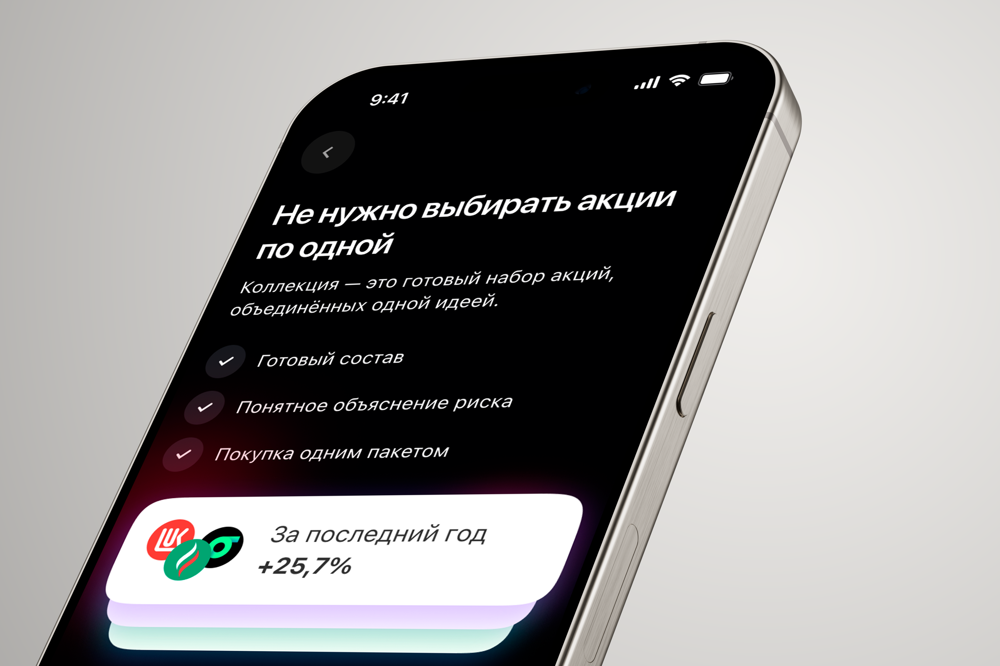
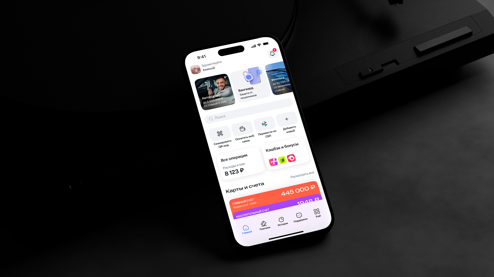
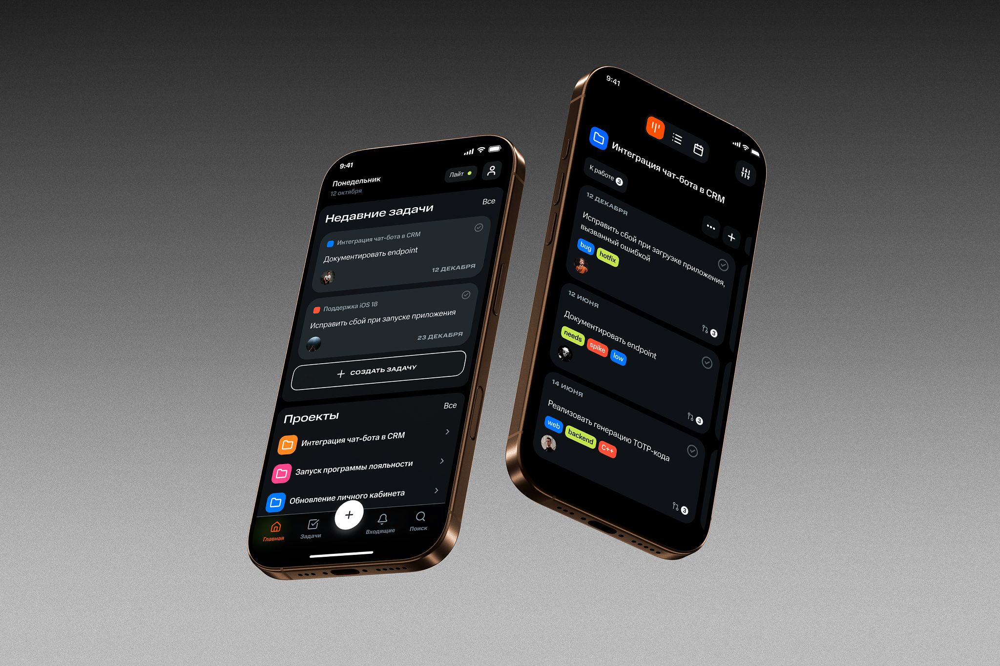
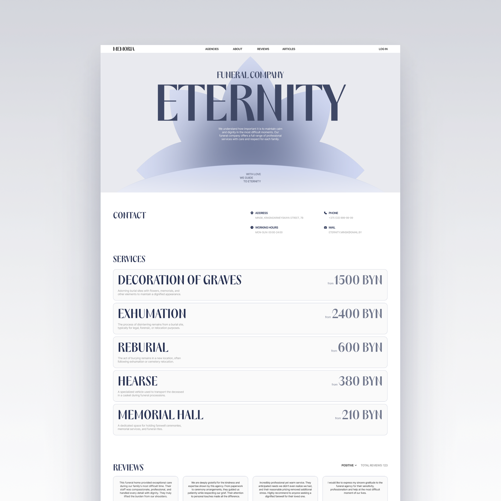

Сценарий инвест-приложения
Коллекции акций для начинающих инвесторов
Проектирование B2B-платформ, мобильных приложений и систем со сложной логикой. Провожу глубинные интервью, юз-тесты и качественные исследования на всех этапах разработки продукта.

Коллекции акций для начинающих инвесторов

Сценарий денежных переводов в конкурентной банковской среде

Корпоративное канбан-приложение

Агрегатор ритуальных услуг